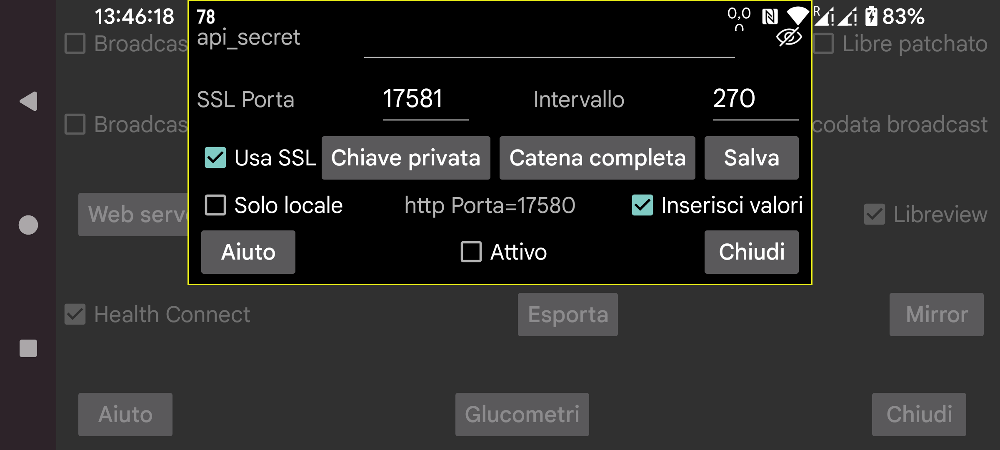

Juggluco incorpora un webserver tramite il quale altre app possono ricevere i valori del glucosio da Juggluco. Può essere usato dagli orologi xDrip e da alcune app Nightscout.
Usare app create per fare uso del webserver xDrip è relativamente facile. Basta selezionare attivo. In seguito possono ricevere il glucosio da 127.0.0.1 sulla porta 17580. URL del server Nightscout: http://127.0.0.1:17580
Anche alcuni follower Nightscout possono usarlo. xDrip, Diabox, un'app Windows Floating Glucose e un widget per Windows, Linux e macOS (Owlet) possono essere usati con http quando "solo locale" non è impostato. Su MacOS lo stesso vale per Nightscout Menu Bar, Gluco Status e Gluco Tracker (tutti nell'Apple Store). Hai bisogno solo di http anche per Nightscouter e LoopFollow (IOS) e Nightguard (IOS e WatchOS).
Se vuoi accedere a Juggluco tramite internet, devi aprire una porta dal tuo modem. Vedi:
https://www.makeuseof.com/tag/what-is-port-forwarding-and-how-can-it-help-me
Menu centrale sinistro->Mirror->Aggiungi connessione->Aiuto
Altri follower Nightscout fanno uso solo di https e questo richiede che Juggluco abbia una chiave SSL autenticata per il nome di dominio usato per accedere a Juggluco. Se il tuo IP esterno ha un nome host associato, puoi ottenere un certificato gratuitamente tramite Certbot. Non puoi usarlo se il tuo IP esterno non ha un nome host. Puoi ottenere un nome di dominio gratuito da https://www.freenom.com. L'ho provato, ma in poche settimane senza alcuna notifica mi hanno semplicemente tolto il dominio e quando ho provato a registrarlo di nuovo aveva un prezzo. Puoi acquistare un nome host per pochi euro all'anno (ad esempio da https://www.strato.nl/domeinnaam).
Dopo aver installato Certbot e aver inoltrato la porta 80 (http) dal tuo modem al tuo computer, puoi semplicemente premere:
certbot certonly --standalone --preferred-challenges http -d myhostname
Vedi https://devpress.csdn.net/linux/62e7999e907d7d59d1c8cfd0.html.
Dopo aver usato Certbot ho trovato la chiave privata in /etc/letsencrypt/live/myhostname/privkey.pem e la full chain in /etc/letsencrypt/live/myhostname/fullchain.pem. "myhostname" è il nome host che ho usato.
Se hai ricevuto i file della chiave da un'autorità SSL, devi fornirli a Juggluco. La chiave privata può essere letta premendo "Chiave privata", la Full Chain premendo "Full Chain".
Se vuoi solo inviare valori del glucosio da un Android all'altro, è meglio usare la funzione mirror di Juggluco (Menu centrale sinistro->Mirror).
Hai bisogno di SSL per le app Android AAPS, Diabetes:M, Nightwatch e Checkmate, Sugarmate (MacOS e IOS) e Xdrip4ios, Shuggah e Cockpit (IOS). Specifica come URL del server Nightscout:
https://hostname:port
hostname è il nome host della chiave autenticata che hai fornito a Juggluco, port è la porta che hai inoltrato alla porta che hai specificato in questa schermata (default: 17581).
AAPS può anche usare il webserver di Juggluco come server Nightscout. Per questo devi selezionare NSClientV3 in AAPS, con le seguenti impostazioni:
usa come NS access token l'api-secret specificato qui;
deseleziona "Connect to websockets";
in "Synchronization", disattiva tutti gli upload. Attiva solo:
Receive/backfill CGM data;
Receive Insulin;
Receive carbs;
Receive therapy events;
Disattiva tutte le "advanced settings".
Inserire valori prima di valori inseriti precedentemente, fa sì che AAPS abbia trattamenti duplicati. Questo accade anche quando l'interfaccia v3 viene utilizzata con un server Nightscout che riceve upload v3 da Juggluco.
A volte AAPS inizia a chiedere al server i trattamenti solo dopo che AAPS è stato forzato a fermarsi e riavviato.
Il webserver può anche essere eseguito su un computer Linux. Riceverà i suoi dati da una connessione mirror da Juggluco connesso al sensore: https://www.juggluco.nl/Juggluco/cmdline.
Un altro telefono può connettersi a questo server tramite una connessione mirror o come follower Nightscout (ad esempio su un iPhone). Se c'è un'app Nightscout che non funziona con questo webserver, fammelo sapere. Magari può essere fatta funzionare con qualche modifica. (Le app IOS Nightscout e Nightscout X sono specifiche di un particolare programma server Nightscout e non funzioneranno con Juggluco.)
api_secret: Specifica che i follower devono impostare l'elemento dell'header http api_secret a questo valore. Questo secret funziona anche quando i follower usano questo secret come token Nightscout o usano l'header api-secret con un secret codificato SHA1. A partire da Juggluco 7.1.15 è anche possibile rendere l'api_secret il primo elemento del percorso dell'URL del server Nightscout. Se xyz è l'api_secret e http://hostname:port è l'URL del server Nightscout, puoi specificare http://hostname:port/xzy come URL del server Nightscout.
Visibile: Rendi visibile il Secret.
Porta: Specifica la porta di rete usata per contattare il server https. Il default è 17581.
Salva: Salva le modifiche di Secret o Porta.
Usa SSL: usa SSL (https). Per SSL devi fornire una chiave privata e una full chain per il nome host usato per contattare questo servizio.
Chiave privata: seleziona un file contenente la chiave privata. Vedi sopra.
Full Chain: seleziona un file contenente la Full Chain, vedi sopra.
Intervallo: intervallo minimo di default (in secondi) tra i valori del glucosio. Normalmente è 270 secondi. Una richiesta può anche cambiare questo valore fornendo l'opzione interval=. Vedi https://www.juggluco.nl/Juggluco/webserver.html
Solo locale: il server http è accessibile solo con localhost (127.0.0.1). Questo non si applica a https.
Fornisci valori: rendi possibile ricevere i valori inseriti usando http://127.0.0.1:17580/api/v1/treatments?count=3. (Devi specificare per ogni etichetta cosa farne. In precedenza era come per Libreview, dopo la versione 4.18.0 puoi mettere le etichette in categorie diverse per Libreview e questo webserver.) Tramite questa interfaccia xDrip può ricevere valori da Juggluco. In xDrip puoi farlo in due modi:
Prendi come "Hardware Data Source", "Nightscout Follower" e fornendo come "Follow URL", http://127.0.0.1:17580 e seleziona "Download Treatments".
Prendi un altro Hardware Data Source ad esempio Libre (patched app) e attiva Settings->Cloud Upload->Nightscout Sync (REST-API). Inserisci come Base API URL, http://somekey@127.0.0.1:17580/api/v1/ e attiva "Download treatments". Caricare su Juggluco è impossibile, quindi questo scarica solo i trattamenti e genera alcuni messaggi di errore.
Quando "Solo locale" non è selezionato, puoi anche usare l'IP della rete locale del telefono su cui è in esecuzione Juggluco e, quando configuri il tuo modem per inoltrare a 17580 di quel telefono, l'IP esterno del tuo telefono. Se hai dato a Juggluco una chiave privata e una full chain per un nome host con cui il telefono è raggiungibile e attivato usa SSL, puoi anche usare quel nome host e la porta che hai specificato qui, usando https invece di http.
Quando vuoi caricare i trattamenti su Diabetes:M, puoi inviare i dati di Juggluco a Libreview e salvare i dati in Libreview con "Download Glucose data" e importare questi dati in Diabetes:M con Data->Import from other sources->Freestyle oppure ottenere una chiave autenticata per il nome host esterno del tuo telefono e fornire come Link external source, Nightscout con come URL, https://yourhostname:Port, dove yourhostname è il nome host del tuo telefono che esegue Juggluco per il quale hai ricevuto una chiave autenticata e Port è la porta che hai indicato qui. Non sembra sincronizzarsi automaticamente, quindi in Diabetes:M devi premere Sync da solo.
Attivo: Il webserver è in esecuzione.
Per ulteriori informazioni sui comandi del webserver Nightscout/xDrip implementati in Juggluco, vedi https://www.juggluco.nl/Juggluco/webserver.html